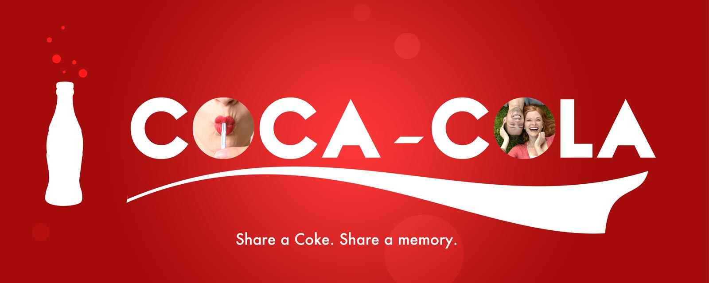
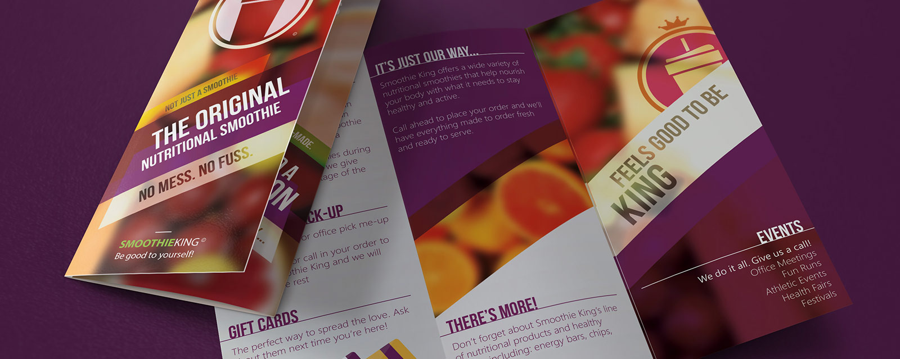

PHILOSOPHY:
An artist's philosophy is his work ethic - it's those principles to stand by when envisioning, conceptualizing, wireframing, drafting, designing, producing, post-producing, and marketing. A philosophy guides an idea through every step of its development from conception to production. It's our idustry's most valuable asset: the reason our jobs will never be outsourced or automated, the reason why innovation has always been and will always be inherently the designer's and not the machine's.
Below I share with you the philosophies most central to my work. With them, I've shared several pieces of my past work that, along the way, have made me prouder and prouder of my field, and of the work that I do.
Below I share with you the philosophies most central to my work. With them, I've shared several pieces of my past work that, along the way, have made me prouder and prouder of my field, and of the work that I do.
1. The Sky's Only There for Dreamers
Often, in our line of work, there is a tendency and a want to draw inspiration from design trends around us. As the system pushes and pulls, similar to the fashion and music industries, new movements become popularized, and eventually over-popularized.
We cannot subject ourselves to a trend on the sole basis of "this seems to work for everyone else." We risk becoming outdated. A successful brand builds its image on the principle of the avant-garde, the cutting-edge: the crazy, so-far-out-there ideas that demand attention. In Nietzche's words, "the surest way to corrupt a youth is to instruct him to hold in higher esteem those who think alike, than those who think differently."
We cannot subject ourselves to a trend on the sole basis of "this seems to work for everyone else." We risk becoming outdated. A successful brand builds its image on the principle of the avant-garde, the cutting-edge: the crazy, so-far-out-there ideas that demand attention. In Nietzche's words, "the surest way to corrupt a youth is to instruct him to hold in higher esteem those who think alike, than those who think differently."

2. Quirkiness is Human
A design is the envelope to a message. Therefore, the most successful way to design, is to connect. It's how we encourage our viewer to understand what we have to say. No one sees the world in monochrome. Don't be afraid to play with colors, diagonals, curves, cloonkiness, and funky, made-up words.
"Stare. It is the way to educate your eye, and more. Stare, pry, listen, eavesdrop. Die knowing something." - Walker Evans.
"Stare. It is the way to educate your eye, and more. Stare, pry, listen, eavesdrop. Die knowing something." - Walker Evans.
3. Fit and Finish is the Attention-Grabber
Each industry has its niche, each client his target audience, each project its context. A designer accessories gallery might want to appeal to a "snappier," sleeker, at times more fashion-savvy clientele. We must be receptive to each of the minute, but indispensable, intricacies of a project and its stakeholders. Fit and finish, and a laser-sharp attention to detail will ensure that every product we make is uniquely its own.

4. Never Settle
We must put so much fervor and passion into every project, that we'd be willing to defend it under any circumstances. If we aren't proud of our work, we haven't put our best into it. To stand tall among the rest, we have to be our own toughest critic, and set our highest expectations. We have to maintain a continuous workflow, and learn throughout every step of the way. Winners aren't born, they're made.
"Being realistic is the most common path to mediocrity" - Will Smith.
"Being realistic is the most common path to mediocrity" - Will Smith.